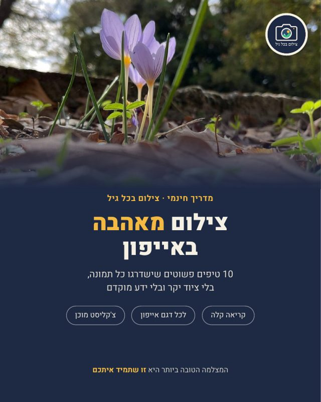

מדריך חינמי · PDF
צילום מאהבה באייפון
10 טיפים פשוטים שישדרגו כל תמונה, בלי ציוד יקר ובלי ידע מוקדם. עם צילומי מסך אמיתיים מהאייפון, בעברית.
⬇ להורדת המדריך
מה במדריך
- 1ניקוי העדשה: הטיפ הכי זול שיש
- 2רשת ופלס לאופק ישר
- 3נעילת פוקוס וחשיפה בנגיעה
- 4לקרוא את האור
- 5זום נכון
- 6מצב פורטרט: רקע מטושטש
- 7צילום בלילה ויציבות
- 8צילום רציף לתנועה ולציפורים
- 9חשיפה ארוכה מתמונה חיה
- 10עריכה עדינה באפליקציית התמונות
- צ'קליסט של 30 שניות לפני כל צילום
- גלריה: תמונות שצולמו באייפון 13, ומה כל אחת מלמדת
- בונוס לבעלי דגמי Pro: ProRAW, טלפוטו ומאקרו